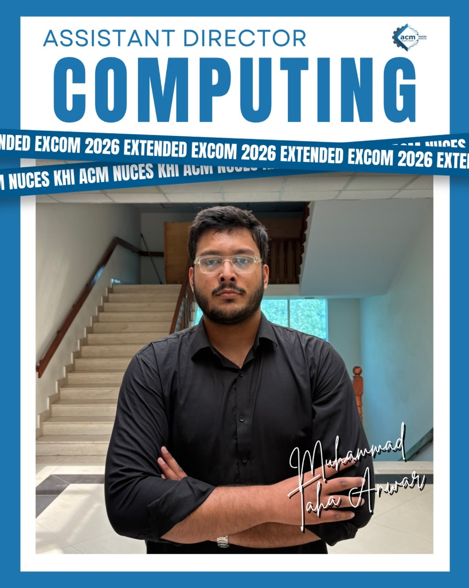
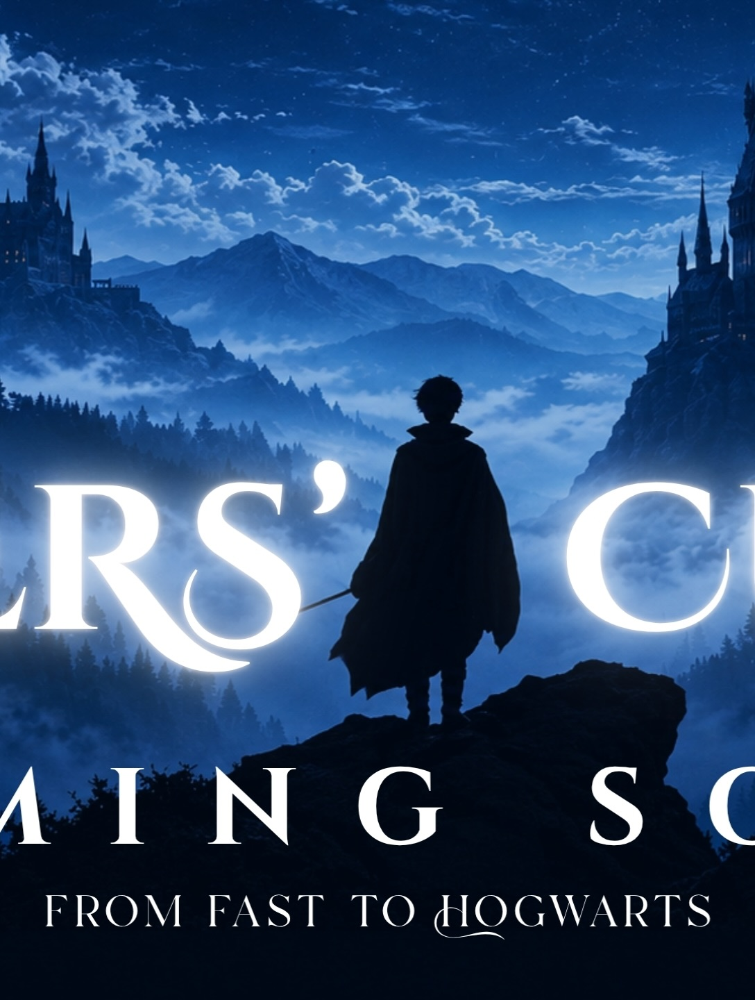

Technical Excellence
Advancing computing as a science and profession within FAST-NUCES Karachi through technical workshops, open-source initiatives, and coding competitions.
ACM NUCES Karachi is the official student chapter of the Association for Computing Machinery at FAST-NUCES Karachi. The TechOps department provides the technical backbone for departmental initiatives, events, and campus-wide competitions.
Advancing computing as a science and profession within FAST-NUCES Karachi through technical workshops, open-source initiatives, and coding competitions.
Managing web infrastructure, competition platforms, technical evaluations, and digital tooling across major chapter events.
Core engineering tracks, intelligent applications, and open-source developer tooling built and maintained by the ACM TechOps team.

Building fast, responsive websites and cross-platform apps with React, Next.js, Node.js, and modern cloud tools.

Designing intelligent solutions, predictive models, and real-time analytics using Python, TensorFlow, and PyTorch.

Developing developer tools, automation workflows, and open-source software through hands-on team projects.
FAST-NUCES Karachi's flagship inter-university competitive programming tournament—testing algorithmic mastery, speed, and team strategy across multi-round trials.
Multi-tiered problem sets spanning data structures, dynamic programming, graph theory, and rapid debugging under timed contest conditions.
Automated verdict pipelines, instant penalty calculation, and live house-style team leaderboards engineered by ACM TechOps.
Bringing together hundreds of student competitors for high-stakes problem solving, mentorship, and campus-wide recognition.



Technical programming executed across the academic calendar to sharpen engineering fundamentals and industry readiness.
Multi-track competitive programming and logic tournament hosted at FAST-NUCES Karachi, featuring Competitive Programming and Dark Protocol arenas powered by TechOps judge infrastructure.
Intensive practical sessions covering Git workflows, full-stack web engineering, machine learning pipelines, and Linux automation for undergraduate cohorts.
Interactive sessions connecting FAST-NUCES students with software architects, researchers, and alumni engineering leaders.
Student leadership guiding chapter operations, technical infrastructure, Coder's Cup execution, and campus outreach at ACM NUCES Karachi.
Chapter Governance & Strategic Direction
Operations & Inter-Departmental Coordination
Chapter Administration & Documentation
TechOps Architecture & Systems
Competitive Programming & Coder's Cup
Logistics & On-Ground Execution
Brand Strategy, Outreach & Communications
Departmental Operations
Departmental Operations
Departmental Operations
Departmental Operations
Reach out to the ACM NUCES Karachi team for technical collaborations, Coder's Cup inquiries, sponsorships, or student chapter onboarding.
National University of Computer & Emerging Sciences (FAST-NUCES), Shah Latif Town, National Highway, Karachi, Sindh, Pakistan.